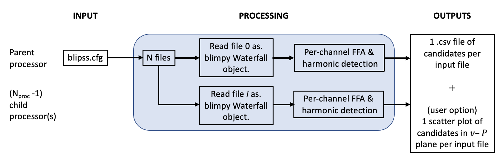

Running BLIPSS
Command-Line Usage
Explain the BLIPSS command-line interface, required arguments, and optional flags.
The BLIPSS package currently contains six chief executable files. Each script in the blipss/executables folder has an associated .cfg file located in the
blipss/config folder that allows you to modify the parameters for the corresponding .py script.
For example, the blipss/config/blipss.cfg file allows you to modify the parameters of
the fast folding algorithm (FFA), such as the minimum and maximum trial folding period
for the FFA search, and it also allows you to specify whether you'd like to deredden the time
series before searching.
blipss.py
The first step is to run the executables/blipss.py file.
This script executes channel-wise FFA on input data files (filterbank or hdf5), identifies harmonics of
detected periods, and outputs a .csv file of candidates. An schematic of the blipss.py workflow
is shown below:

Image caption
To ensure a successful run, you'll
have to open the blipss/config/blipss.cfg file and modify the path for the input data. For
example, if you stored the test data in your Downloads folder, then the snippet for your
input data should look like this:

Image caption
You'll have to do the same for the OUTPUT_DIR variable in the same script.
Once you've made these modifications, you'll need to save the file and now you can run the
blipss.py script as follows
mpiexec -n <nproc> python -m mpi4py executables/blipss.py -i config/blipss.cfg | tee <Log file>
where <nproc> specifies the number of processes that will be used in this run (e.g., you can
set it to 2) and <Log file> is the name of the text file where the output of the command
above will be printed (e.g., you can call it output1.txt).
If this command is successfully run, you should get an output that looks like this

Image caption
This will produce two .csv files whose name ends with ...-beam0000_cands.csv and
...-beam0001_cands.csv. Each of these files contain the information about the radio
frquency used (in MHz), the number of bins, the best width, the period of the pulsar (s), the
signal-to-noise ratio (S/N), and the harmonic flag for a specific channel.
In addition to these .csv files, you should obtain two plots that look like this

Off-beam

On-beam
compare_cands.py
Now that we've processed the data for the two candidates, we have to compare them by running
the executables/compare_cands.py script. This script compares the periodicity detections across
a set of N .csv files generated by blipss.py. For every unique candidate period, an N-digit
binary code is generated, wherein ones and zeros represent detections and non-detections,
respectively.
As with the blipss.py script, we need to modify the
parameters first by editing the path to the blipss repo in your local machine. To do this we have
to open the config/compare_cands.cfg file and modify the path to the .csv files generated by
blipss

Image caption
Now that we've edited the path in the .cfg file, we are now ready to run the compare_cands.py
script. To run it, we should type the following command in the terminal
python executables/compare_cands.py -i config/compare_cands.cfg | tee <Log file>
where <Log file> is the name of the file where the output will be saved to.
If the run is successful, you should see an output message that looks like this

Image caption
This will produce a new .csv file whose name ends with comparecands.csv.
filter_cands.py
Next, we have to run the filter_cands.py script. This script is going to narrow down the search
by selecting the channels that have a S/N>20 and have code 10.
To run this script, we have to type the following in the terminal
python filter_cands.py
and the output should be yet another .csv file whose name ends with ...filtered.csv.
Plotting the results
Now that we've managed to filter the candidates that have a S/N>20 and code 10, it's time
to plot the results for these candidates. The script we want to run is called plot_cands.py and
it has an associated .cfg file that needs to be modified with the correct path to your local
version of the blipss repo. Once you make these edits (following the same process as with
previous scripts), you have to run the following command in the terminal
python executables/plot_cands.py -i config/plot_cands.cfg | tee <Log file>
where <Log file> will be the name of the file where the output of this run will be printed.
If everything goes well, you should get the following output:

Image caption

Image caption
In the example above, we had 21 candidates, so after running this last script, you will obtain one plot for each of the 21 candidates that looks like this

Image caption
The candidate period is indicated by the red vertical dashed line.
At this point, you'll have the pipeline working and validated!